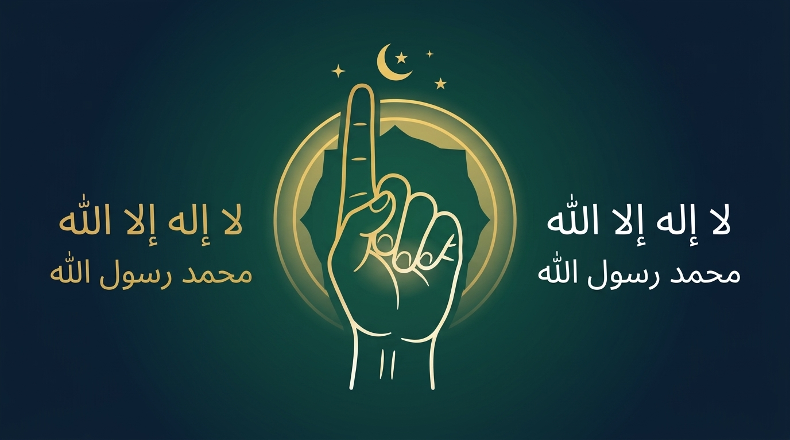
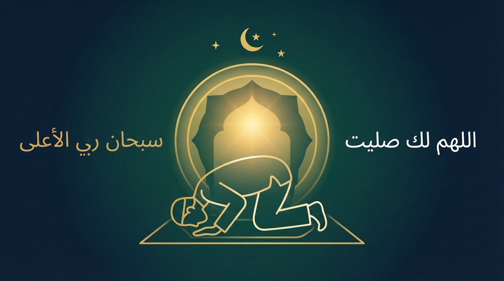
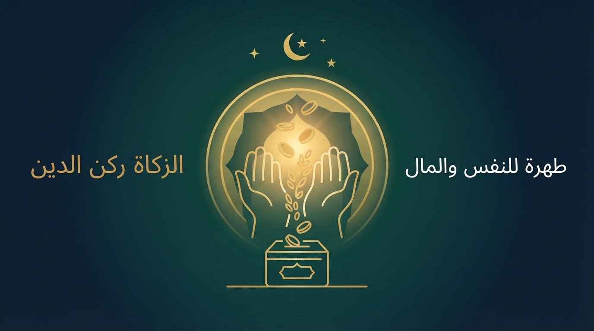
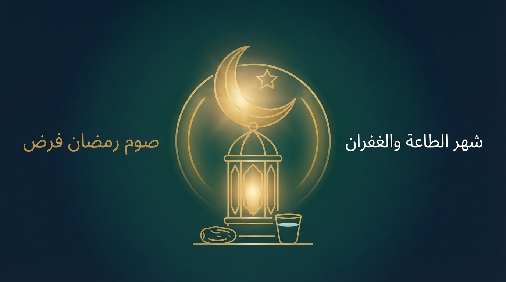
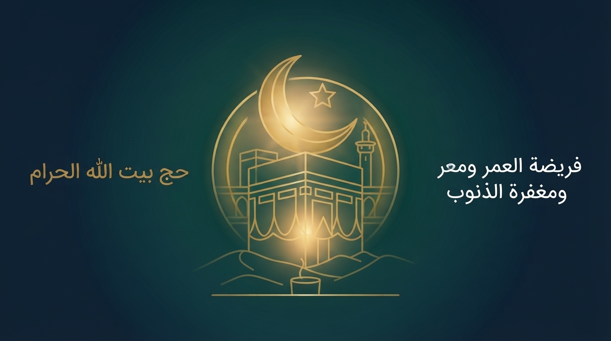

الركن الاول
1 . الشهادتين

- هو قول "اشهد ان لا اله الا الله واشهد ان محمد رسول الله"
الركن الثاني
2 . الصلاة

- هي عبادة لله تعالى ذات أقوال وأفعال مخصوصة، تبدأ بالتكبير وتنتهي بالتسليم
الركن الثالث
3 . الزكاة

- التعبد لله تعالى بإخراج جزء واجب من مال مخصوص بلغ النصاب، وصرفه لجهات مخصوصة شرعاً
مصارف الزكاة الثمانية:
- الفقراء والمساكين. وهم أصحاب الحاجة الذين لا يجدون كفايتهم أو يجدون جزءًا منها
- العاملون عليها. وهم الموظفون المكلفون بجمع الزكاة وتوزيعها
- المؤلفة قلوبهم. وهم من يُرجى إسلامهم أو تثبيت إيمانهم
- في الرقاب. ويُقصد بها تحرير الأسرى والعبيد
- الغارمون. وهم المدينون العاجزون عن سداد ديونهم المباحة
- في سبيل الله. ويُصرف في أوجه الجهاد ونصرة الدين
- ابن السبيل. وهو المسافر الذي انقطعت به السبل ونفد ماله في غير بلده
الركن الرابع
4 . صوم رمضان

- التعبُّدُ لله سبحانَه وتعالى، بالإمساكِ عن الأكلِ والشُّربِ وسائِرِ المُفَطِّراتِ، مِن طُلوعِ الفَجرِ إلى غُروبِ الشَّمسِ
الركن الخامس
5 . حج بيت الله الحرام

- قصد بيت الله الحرام في مكة المكرمة والمشاعر المقدسة في وقت مخصوص لأداء مناسك محددة تعبداً لله تعالى